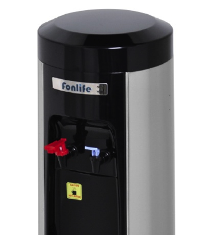

A nossa empresa propõe-se estabelecer com os seus
clientes um diálogo que lhes permita optimizar os seus
resultados.
Esse diálogo pode ter inicio logo na fase de consultadoria
ou na de ante-projecto do estabelecimento.
Efectivamente, Friorganic, Lda. está preparada para
elaborar Projectos de Arquitectura funcionalmente dirigidos
às finalidades dos seus clientes, (espaços comerciais,
industriais, públicos ou domésticos).
Projectos de frio industrial, ar condicionado e ventilação
para os quais está habilitada a fornecer e instalar
directamente os equipamentos.
Projectos e instalações de equipamentos de Desumidificação bem como de Humidificação.
O referido diálogo continua necessariamente pela prestação,
a tempo e horas, de acessórios e assistência técnica que se
revelarem necessários.
